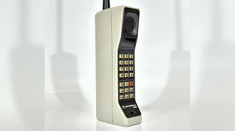
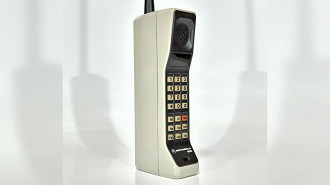
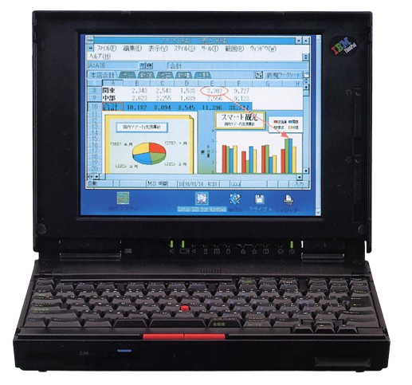

A Evolução dos Celulares
Publicado em: 01/01/2024
Os primeiros telefones celulares surgiram na década de 1970...
Para saber mais sobre a história dos celulares, visite este link da Wikipedia.
Publicado em: 01/01/2024
Os primeiros telefones celulares surgiram na década de 1970...
Para saber mais sobre a história dos celulares, visite este link da Wikipedia.
Publicado em: 02/02/2024
Os primeiros computadores, como o ENIAC, surgiram na década de 1940...
Saiba mais sobre a história dos computadores neste artigo.
Publicado em: 03/03/2024
Os notebooks começaram a ganhar popularidade nos anos 1990...
Leia mais sobre a evolução dos notebooks aqui.